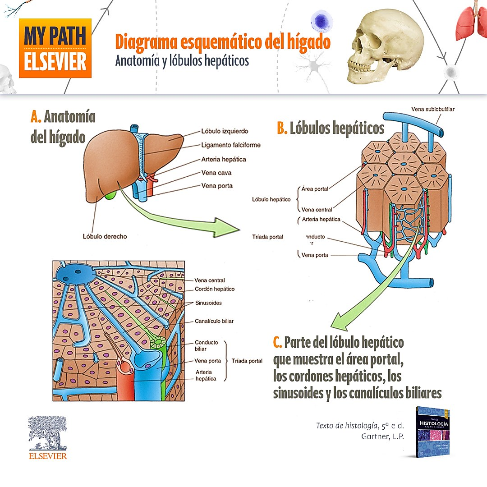
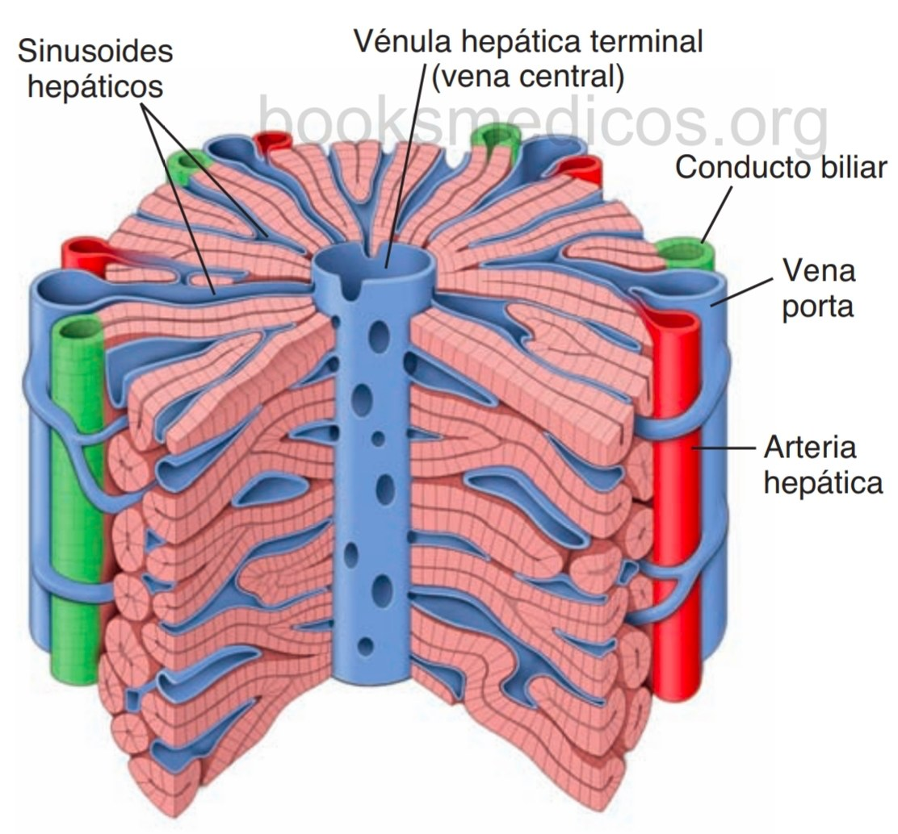
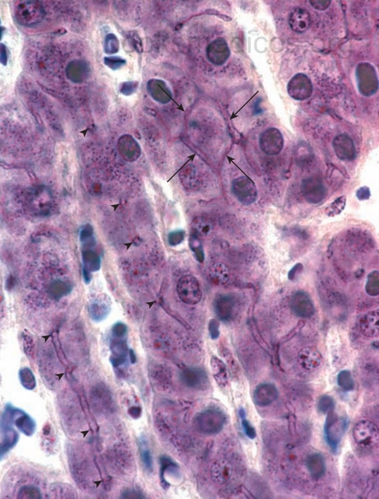
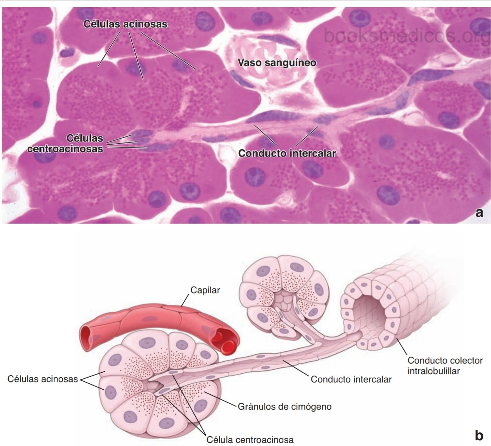
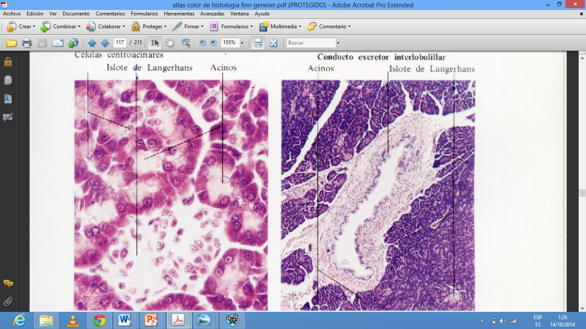
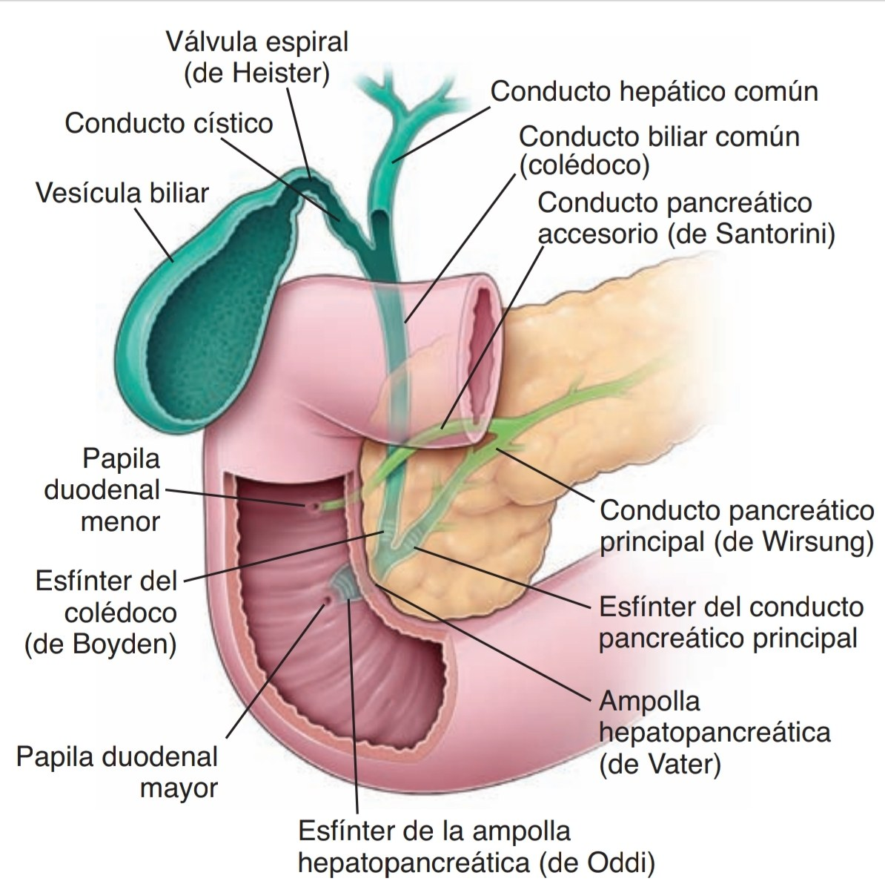
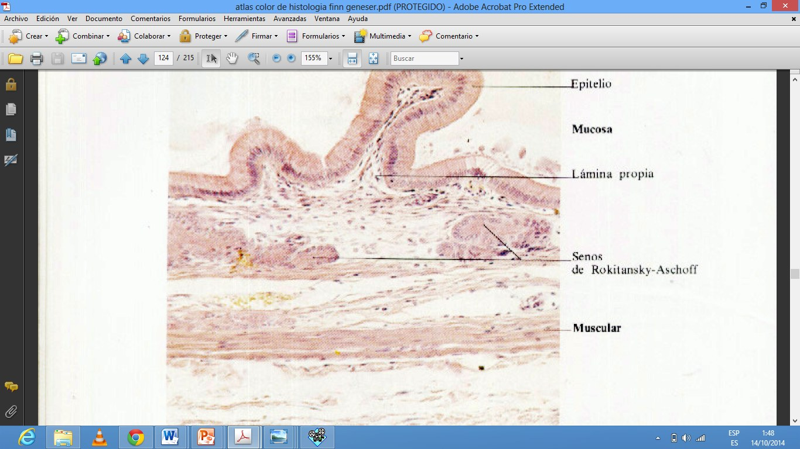

ClinicusMed · Dossiê Clinicus — Padrão de Excelência

| Estrutura | Detalhe |
|---|---|
| Revestimento | Cápsula de Glisson (T.C. fibroso denso irregular) + peritônio visceral (cobertura serosa) |
| Divisão macroscópica | 2 grandes lóbulos (direito-esquerdo) + 2 pequenos (quadrado e caudado) |
| Hilo hepático | Entram: artéria hepática + veia porta. Sai: conduto hepático comum |
A cápsula de Glisson se continua pro interior da glândula, dividindo-a em lobulillos (unidade estrutural) — aí é chamada de tecido conjuntivo periportal, pois rodeia as tríades portais. Célula principal: hepatócito.

| Unidade | Descrição |
|---|---|
| Lobulillo clássico | Unidade ESTRUTURAL — prisma hexagonal, limitado por T.C. interlobulillar. Cordões de hepatócitos irradiam da periferia até a veia central |
| Lobulillo portal | Unidade centrada na secreção biliar, com a tríade portal no centro |
| Ácino hepático | MENOR unidade FUNCIONAL — tecido hepático entre 2 veias centrais. Células mais internas (zona 1) têm menos risco de necrose; as mais externas (zona 3, perto da veia central) são mais vulneráveis |

| Estrutura | Função |
|---|---|
| Sinusoides hepáticos | Capilares especializados entre cordões de hepatócitos |
| Células de Kupffer | Macrófagos sinusoidais estrelados FIXOS — fagocitam eritrócitos velhos |
| Células Ito (estreladas hepáticas) | Lipocitos — armazenam lipídios e vitamina A, regulam fluxo sanguíneo, produzem colágeno |
| Espaço de Disse | Entre células endoteliais e hepatócitos — contém células Ito, rede reticular, fibroblastos. É considerado um espaço intersticial |
| Vias linfáticas | Superficiais e profundas — a linfa se forma no espaço de Disse, rica em plasmócitos |
Segunda maior glândula associada ao tubo digestivo. Situado na parede posterior do abdome, próximo ao duodeno e ao baço. Mede ~20 cm, pesa ~100g. NÃO tem cápsula verdadeira (só uma fina camada de T.C. laxo). Finos septos dividem em lobulillos.
| Componente | Função |
|---|---|
| Exócrino | Sintetiza/secreta enzimas pro duodeno (sistema de conductos) — até 1500 mL/dia de suco pancreático |
| Endócrino | Sintetiza insulina e glucagon, secreta direto na corrente sanguínea — regula metabolismo de glicose, lipídios e proteínas |
O componente exócrino ocupa praticamente toda a glândula; dentro dele, ficam dispersas as ilhotas de Langerhans (componente endócrino) — representam só 1% do total.

É uma glândula SEROSA tubuloacinosa. Os ácinos são redondos, com 40-50 células epiteliais piramidais de núcleo redondo. T.C. periacinoso mínimo. Acinos rodeados por capilares NÃO fenestrados.
| Estrutura celular | Detalhe |
|---|---|
| Região supranuclear | Grânulos de cimógeno (enzimas digestivas em forma INATIVA) |
| Basofilia citoplasmática | Por RER e ribossomos livres — alta síntese proteica |
| Complexo de Golgi | Bem desenvolvido no polo apical — concentra/envasa produtos de secreção |
| Células centroacinosas | Células do conduto intercalar que entram DENTRO do ácino (é o início do conduto intercalar) |
| Conduto | Trajeto |
|---|---|
| Conducto de Wirsung (principal) | Percorre toda a glândula, recebe conductos interlobulillares, desemboca na ampola de Vater |
| Conducto de Santorini (acessório) | Inconstante, recebe afluentes da parte inferior da cabeça do pâncreas |

Massa compacta de células epiteliais poligonais em cordões curtos irregulares, atravessada por rica rede de capilares FENESTRADOS (diferente dos capilares do exócrino, que são não-fenestrados). Mais numerosas na cauda e corpo do pâncreas.
| Célula | % do total | Hormônio | Efeito principal |
|---|---|---|---|
| A (alfa) | 15-20% | Glucagon | AUMENTA glicemia |
| B (beta) | 60-70% | Insulina | DIMINUI glicemia |
| D (delta) | 5-10% | Somatostatina | Inibe secreção de insulina E glucagon (ação parácrina) |
| F (PP) | 1-2% | Polipeptídeo pancreático | Regulação local |

| Túnica | Características |
|---|---|
| Mucosa | Epitélio cilíndrico alto simples com microvilosidades curtas (colangiócitos). Lâmina própria: T.C. laxo, muitos linfócitos/plasmócitos, glândulas mucosas dispersas (mais no colo), capilares fenestrados. SEM vasos linfáticos |
| Ausências | CARECE de muscular da mucosa E de submucosa |
| Muscular | Fibras musculares lisas orientadas aleatoriamente, com fibras colágenas e elásticas abundantes |
| Perimuscular | T.C. denso com vasos de grande calibre, rede linfática extensa, nervos autônomos, tecido adiposo |
| Serosa/Adventícia | Adventícia onde adere ao parênquima hepático; Serosa (mesotélio+T.C.) na superfície livre |

Vamos acompanhar um paciente com alterações hepáticas, pancreáticas e biliares, relacionando o caso à histologia das glândulas digestivas anexas. O caso evolui em 3 níveis — clica em cada um pra ver como as coisas vão se desenrolando.
A Clinicus selecionou este conteúdo para complementar seu estudo. Não substitui a leitura do resumo — o resumo ensina, o vídeo reforça.
Carregando recomendações...
O sistema guarda, no seu navegador, quais cards você já sabe bem e quais precisam voltar mais cedo — cada vez que você avalia um card, ele recalcula quando ele deve voltar.
10 questões, do mais básico ao mais puxado. Escolhe uma alternativa, depois clica em "Ver comentário completo" — vale a pena ler até quando você acerta, porque o comentário explica cada alternativa, não só a certa.
Todas as imagens desse capítulo, reunidas num só lugar pra revisão rápida.